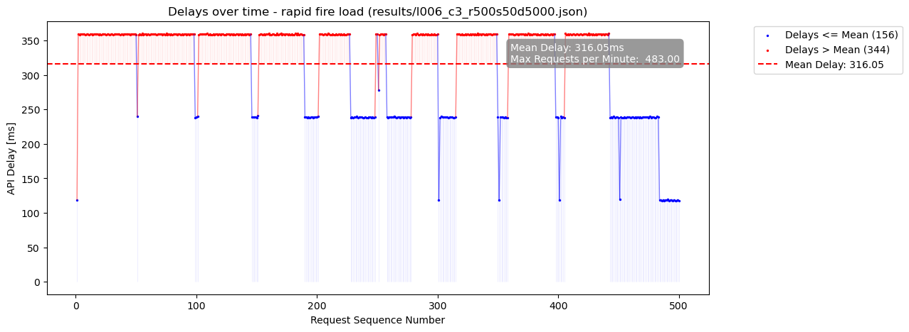
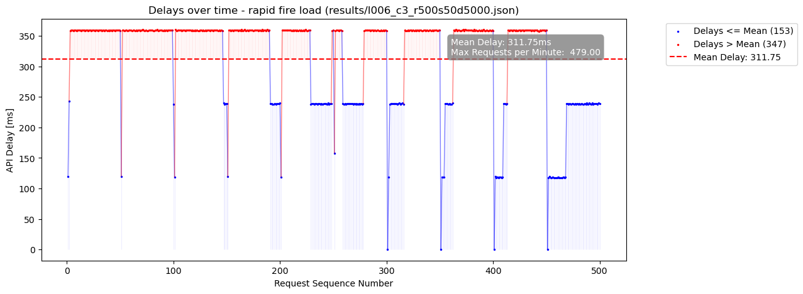
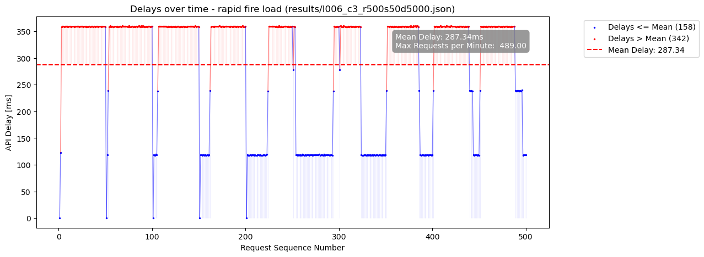
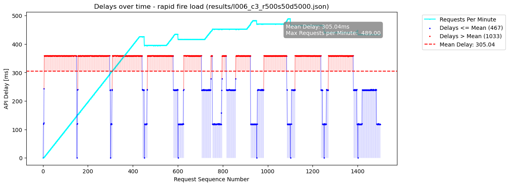
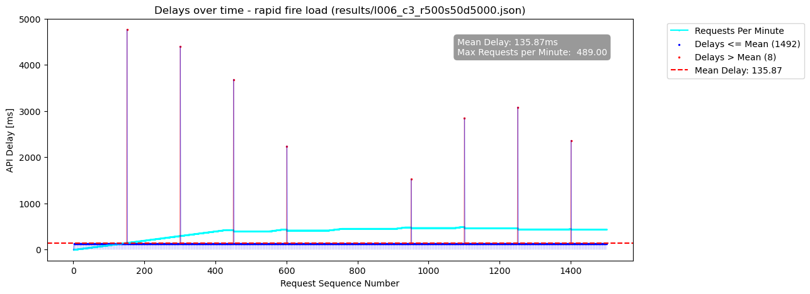

Report for results/l006_c3_r500s50d5000.json
Server Config:
{'slug': '/api_guard', 'port': 5500, 'initial_limit': 500, 'num_workers': 3, 'api_token': 'renerocksai'}
Client Bot Config:
{'num_threads': 3, 'req_per_thread': 500, 'url': 'http://127.0.0.1:5500/api_guard/request_access?handle_delay=true', 'auth_bearer': 'renerocksai', 'out_file': 'results/l006_c3_r500s50d5000.json'}
Client 0:

Client 1:

Client 2:

All Clients

Real Delays Between All Requests (including voluntary Client pauses)
